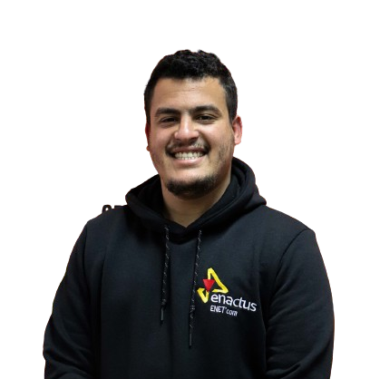

Building the logic
between hardware and the cloud.
PhD Student — STA Lab · Embedded Systems & IoT Engineer
I design intelligent embedded architectures and secure IoT systems from firmware and sensor pipelines up to the AI and cloud layers that make them useful. Currently researching quantum‑enhanced IoT at the National School of Engineering of Sfax.

Focus areas
What I work with
Embedded & Firmware
STM32, ESP32/ESP8266, Arduino and Raspberry Pi platforms from bare‑metal firmware to real‑time sensor pipelines.
Connected & IoT Systems
Secure device‑to‑cloud communication with MQTT, LoRa and Firebase, built for reliability in the field.
Applied AI & Quantum
CNN‑based computer vision, deep learning web apps, and quantum‑computing prototypes for next‑gen IoT.
Selected work
Featured projects
Quantum‑IoT Prototype
May – Aug 2025 · Mitacs, CanadaA prototype system exploring quantum computing applications inside IoT device pipelines.
Infected Tomato Detection
Jan 2025A CNN‑based computer vision model serving real‑time plant‑disease classification through a Flask API.
Agriculture Remote Control
Jul – Aug 2024Long‑range IoT farm control system reporting live sensor data to a Firebase backend.